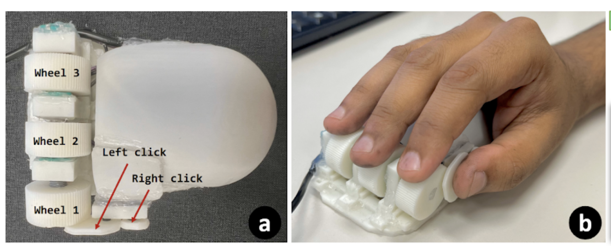

Work
Portfolio

HCI · Accessibility · Input Devices
Wheeler
A mouse-shaped input device with three independently rotatable wheels for non-visual GUI navigation. Wheeler supports both hierarchical navigation and 2D navigation, helping blind users move through complex interfaces more efficiently.
HCI · Accessibility · Computer Vision
BLV Road Nav Objects
Identified 90 key objects essential for BLV individuals' street navigation from 21 real-world videos. A follow-up focus group study revealed major gaps in prominent vision datasets such as KITTI and MS-COCO.
HCI · Accessibility · Mobile
SpaceXMag
Automatic, scalable screen-space optimization framework that compacts smartphone app layouts for low-vision magnifier users. Reduced overview and target-finding task times by 28–43% in controlled user studies.
HCI · Accessibility · Probabilistic Modeling
Accessibility Metrics (PAALSS)
Identified navigational complexity as the key usability barrier for blind users; proposed a probabilistic model with three metrics (PAALSS) to quantify and improve desktop application accessibility for keystroke-based non-visual interaction.
HCI · Accessibility · API
OpenAccAPI
An open accessibility API for desktop and web applications. Provides structured programmatic access to UI component metadata to support assistive technology developers and accessibility researchers.

Computer Vision · VLMs · Evaluation
IKIWISI
Interactive heatmap-based tool for evaluating vision-language model reliability without ground truth — surfaces inconsistencies and object-tracking failures across video frames.
Computer Vision · Video Segmentation
Temporal VOS Loss
A novel training loss for video object segmentation that enforces temporally smooth object motion. Yields up to 4% J&F gains on small, occluded, and reappearing objects across DAVIS, YT-VOS, and LVOS benchmarks.
Computer Vision · 3D Scenes · LLMs
Object Trajectory Narratives
Distributed 3D scene data pipeline built from engine telemetry (no pixels). Enables 7B LLMs to generate complex motion narratives at GPT-4V-level accuracy at a tiny fraction of the compute cost.
Computer Vision · Video Analysis · Systems
ForenSight
Local-first video investigation pipeline using CLIP embeddings + FAISS for text-to-timestamp retrieval and event-centric playback. Supports ROI/line rules, policy tagging, multi-camera correlation, and case export.
LLMs · Education · Agentic AI
TeachPilot
Classroom LLM assistant (Streamlit + Ollama) with instructor-controlled prompts and multi-level help scaffolding to promote think-first student engagement. Pre/post study showed statistically significant gains in AI literacy.
LLMs · PEFT · Machine Unlearning
LLM Unlearning with Synthetic Data
LoRA-based PEFT unlearning pipeline to surgically remove behaviors (e.g., bias) from LLMs via multi-GPU fine-tuning. Synthetic training data generated using Meta's synthetic-data-kit with vLLM (Llama-3.3-70B).